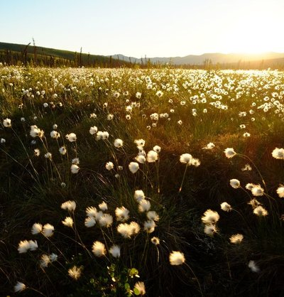

Alaska Botany Forum 2018
22 March, at University of Alaska, Fairbanks
The annual Alaska Botany Forum is an opportunity to present talks and posters on topics related to the wild plants and fungi of Alaska, Yukon and the Russian Far East of interest to amateur or professional botanists and mycologists. These include taxonomy, biogeography, ecology, physiology, genetics, ethnobotany, ethnomycology, and also reports of collecting trips.
Location
The meeting is hosted this year by ALA (herbarium of the University of Alaska Museum of the North). We will meet in Room 501 (top floor) of the International Arctic Research Center (IARC), UAF West Campus, 2160 Koyukuk Dr., Fairbanks, AK 99775 (MAP).
Contributions
Talks
(schedule as of Friday, 16 March; subject to change)
- 09:00 - Welcome and announcements, Steffi Ickert-Bond
- 09:10 - Rare Plant Survey for Fort Greely, Alaska, Jeff Mason [Abstract]
- 09:30 - Building a statewide vegetation plot database and prediction of species abundances, Timm Nawrocki [Abstract]
- 09:50 - Species richness, community composition, and species distribution patterns in Aleutian plants, Monte D. Garroutte, Falk Huettmann, Campbell O. Webb, and Stefanie M. Ickert-Bond [Abstract]
- 10:10 - Patterns of Plant Succession in the Central Brooks Range: from alpine to Arctic tundra along a glacial sequence, Shawnee A. Gowan [Abstract]
- 10:30 - Coffee break
- 10:50 - The problem with names: Taxon concepts and the integration of historical taxonomies for the flora of Alaska, Campbell O. Webb, Stefanie M. Ickert-Bond, and David F. Murray [Abstract]
- 11:10 - The Claytonia arctica complex – a Beringian taxonomic puzzle, Stefanie M. Ickert-Bond, David F. Murray, and Campbell O. Webb [Abstract]
- 11:30 - Phlox hoodii and P. richardsonii are phenotypically and genetically distinct, Bruce Bennett [Abstract]
- 11:50 - Phenology of P. tremuloides in interior Alaska, Loring P. Schaible, Carl Roland, Fleur Nicklen, David Swanson, and Sarah Stehn [Abstract]
- 12:10 - Lunch break
- 13:30 - The value of Ecological Land Surveys (ELS) to plant conservation efforts, Aaron Wells [Abstract]
- 13:50 - Range Expansions - Invaders or Residents?, Bruce Bennett [Abstract]
- 14:10 - On Open Access, data mining and plant conservation in the Circumpolar North with an online data example of the Herbarium, University of Alaska Museum of the North, Falk Huettmann, and Stefanie M. Ickert-Bond [Abstract]
- 14:30 - Unique and high diversity plant communities in interior Alaska are threatened by woody plant expansion, Carl Roland, and Jay M. Ver Hoef [Abstract]
- 15:00 - Tea break
- 15:20 - Effects of the aspen leaf miner (Phyllocnistis populiella) outbreak on tree growth and physiology, Diane Wagner, Stephen J. Burr, and Patricia Doak [Abstract]
- 15:40 - NEON’s Approach to Botany: past, present, and future, Will Hendricks, and Lori Petrauski [Abstract]
- 16:20 - Alaskan berry citizen science from buds to berry loss - An overview of the Winterberry and Late Bloomers citizen science projects, Katie Spellman, and Christa Mulder [Abstract]
Posters
- P1 - A new raster Circumpolar Arctic Vegetation Map (CAVM), Martha K. Raynolds, Donald A. Walker [Abstract]
- P2 - Alaska berries and climate change, Lindsey V. Parkinson [Abstract]
Remote Live Stream
This event will be live-streamed. You may watch the event in Anchorage on a large screen: the UAA herbarium (MAP) will host a community viewing of the live stream, from 9 AM to 5 PM.
Alternatively, you may watch from anywhere. Viewers will be able to see talks, and interact (i.e., ask questions) via a text chat interface. No additional software will needed beyond a browser. Please register using the link below, indicating you are only intending to attend remotely. We will then send details and the URL of the meeting (the URL will not be made public here).
Please note: the URL of the live stream will only be passed to registered viewers, and we will not be recording the live stream. However, if you are presenting and object to your talk being streamed, please let us know and we will do our best to disconnect the stream during your talk.
Instructions for presenters
Oral presentations will be 20 minutes in duration, including Q&A. Standard audiovisual equipment will be available, and your slides may be in PPTX, ODP, or PDF formats. Your presentation files must be submitted before the end of Tues 20 March, to the email address below. Note: if your file is too large for email, please upload it to Google Drive, share it via a link, and send the link to us.
Poster presenters should arrive no later than 8:30 AM so as to have time to set up their posters. They will be expected to stand by their poster during coffee and tea breaks.
- There is abundant parking near the IARC building (see map). You will need to pay-and-display ($5 for the day).
- Sorry, we are not able to offer lunch. However there are several dining options within walking distance (see MAP), and many more within a 5 minute drive. The meeting room will remain open if you wish to bring your lunch and eat it there.
- We will offer coffee and snacks. We would be very grateful if anyone else would also like to contribute baked goods, fruits, nuts, or other snacks appropriate for coffee and tea breaks!
- Please bring a mug, to reduce the use of disposable cups. Thanks!
- After the event has ended (ca. 5 PM), everyone is most welcome to adjourn to the UAF Pub (see MAP) for a post-meeting, informal social event. Bar snacks are available there, and we can make dinner recommendations if you are not directly heading home.
Registration still open
Please register using this online form. Registration for new non-presenting attendees will stay open until 20 March. If you have not yet registered and would like to make a presentation, please contact us soon (see below).
ALA Herbarium activities and access
You are also welcome to examine the herbarium collections on Friday, 23 March. Please contact us before the end of Tues, 20 March so that we can arrange guest access to the building.
If you have any questions, please contact Steffi Ickert-Bond and/or Cam Webb, using this email address: akbf2018@alaskaflora.org.
Hashtag
Please use: #akbf2018
Map